The Devious Alarm
Overview
This project is the final project of my ME 100: Electronics for the Internet of Things class I took during my undergraduate degree. This project tasks teams of students with making an IOT device that utilizes multiple ESP32 microcontrollers, actuators, and sensors to solve a problem of their choosing. As such my team and I decided to create an alarm clock to solve the problem of us being constantly late for our 8 am ME 100 lab.
To achieve this goal we set out to develop an alarm that was impossible to ignore and impossible to shut off until you were actually out of bed and getting ready for your day. This was accomplished by creating an alarm that integrated with your exing phone alarm and additional motivating factors that encourage immediately leaving the bed and punishes sleeping in. These factors were a wooden arm that smacks you, a blinking LED light, and a water sprayer. This alarm is activated by detecting when your phone alarm goes off, pauses when you leave your bed, and only shuts off when you open your door and leave your room.
These functionalities were split across 3 ESP32's that communicated with each other over ESP Now. Since there were three ESP32 components and three members of my project group it was decided that each member would work on one of the ESP32 systems. As such I will only discuss the overall system architecture and the ESP32 group I Worked on, ESP1.
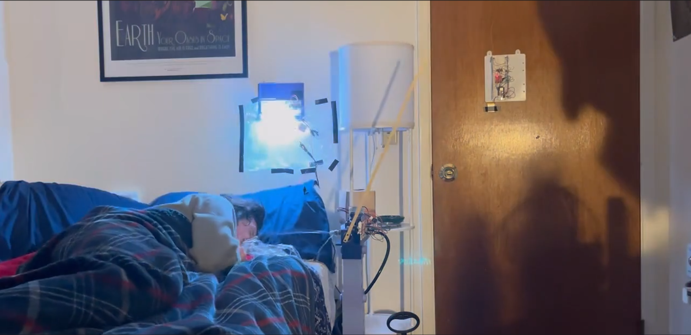
Alarm System Architecture
As can be seen from the diagram each ESP32 controls its own set of actuators and sensors whose control needs to be coordinated across all three ESP32s. This was achieved by designating one ESP32, ESP3, as the hub or brain ESP32. THis ESP32 was in charge of keeping track of what alarm state the system was at as well as telling the other two ESP32s when to actuate their various components. This communication was done using the ESP32 inbuilt ESP Now communication protocol. This diagram also illustrates the components present in the system along with what they are sensing for the sensors and what they are actuating for the actuators. It also illustrates for the sensors what a positive value does to the system if observed.
The alarm was designed to function as a cascaded system, with the alarm getting progressively more annoying as time progresses. Once the alarm senses the sounds of a phone alarm going off via the microphone, it activates alarm state one which is just the balsa wood smacker. If the alarm is ignored for too long then the second stage activates which consists of both the balsa wood smacker and the strobing LED strip. Finally if the alarm is further ignored the third and final stage is activated which consists of the smacker, the LED, and a cold water sprayer pointed at the user's face. At any point during this alarm progression one of two interrupts can occur. If the target takes their head off of their pillow as detected by a force sensitive resistor the alarm will pause, ceasing all activities. However, once the user puts their head back onto the pillow the alarm will resume at the same alarm level as when the pause occurred. This is to prevent perpetual snoozing which results in tardiness. The other interrupt, and only way to disable the alarm, is to open the door of the room and leave which is sensed by the IMU attached to ESP3. This shuts down the alarm permanently until reset by the user for the next night.
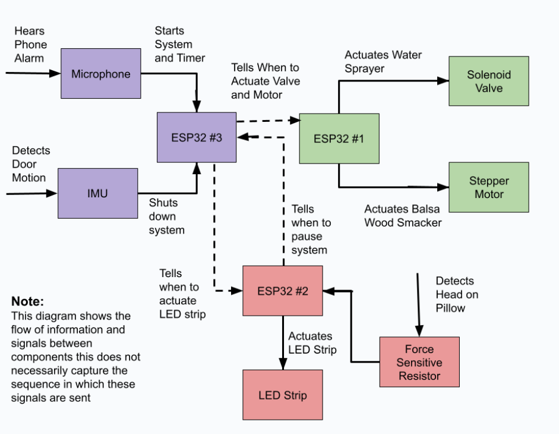
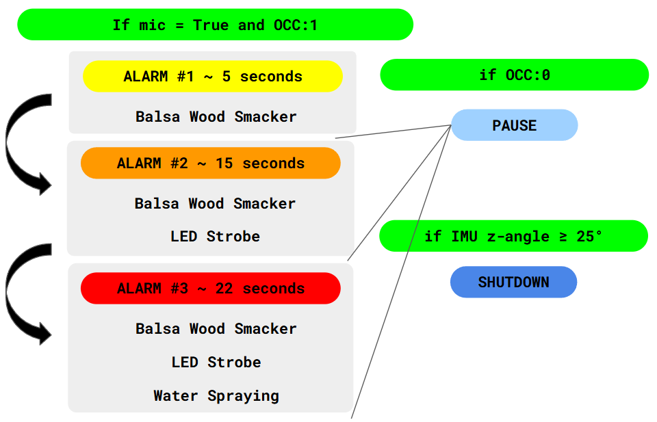
Since each ESP32 was specialized to handle different tasks for the alarm they each needed to be located in a location where they could best achieve their task. ESP1 was mounted in a stand near the bed such that the smacker and water sprayer was at the user's level when laying on the bed. ESP2 was mounted on the wall above the bed to place the LED close to the user's face and allow easy wire rounding to the pillow for the force sensitive resistor. ESP3 was mounted at the door so that the IMU could sense the door's movements and the microphone could sense the users phone alarm from anywhere in the room.
In addition to each ESP32 being located in a particular spot in the user's room, they each also had a special mount to support the activity they needed to perform. The ESP1 mount needed to be easily adjusted to account for different bed heights as well as have a mounting platform for the stepper and solenoid valve to be mounted to. As such I designed a telescoping standing mount that the ESP1 system could be integrated width. The ESP2 mount needed only to be mounted to the wall and have a place to wrap the LED strip to. AS such I designed the mount to have a removable rod to wrap the LED strip to as well as various mounting cubbies for the various batteries needed by the system. THe ESP3 system had two different mount needed for the in room use case only a simple wall mount was needed, however this project required a live demonstration in from of the professor therefore I developed a door simulator that would allow this wall mounting stand to be connected to a hinge and allowed to swing like a door. All of the mounting infrastructure was 3D printed out of PLA on my Bambu A1 printer for ease of manufacturing and rapid design iteration.
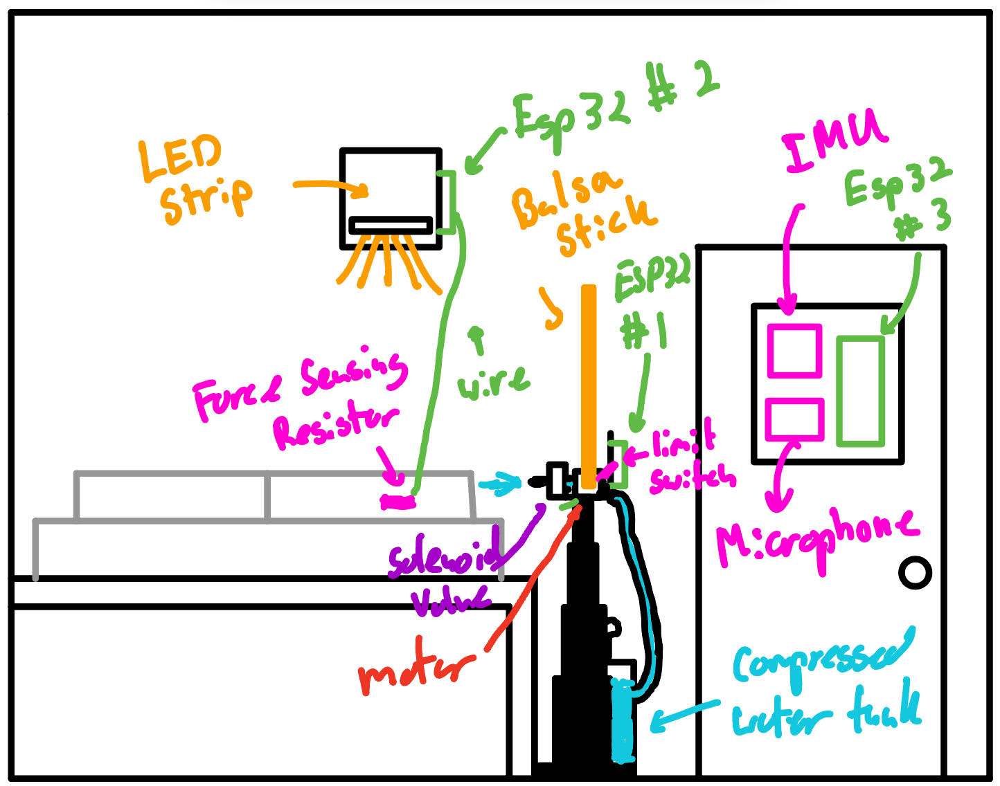
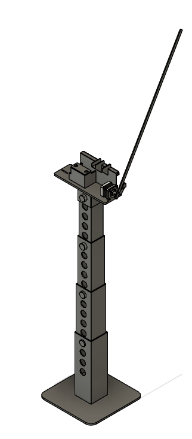
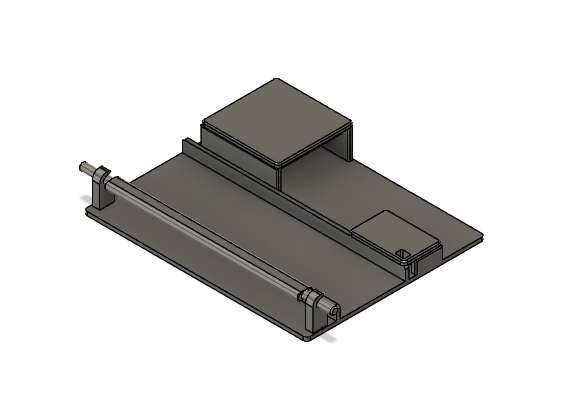
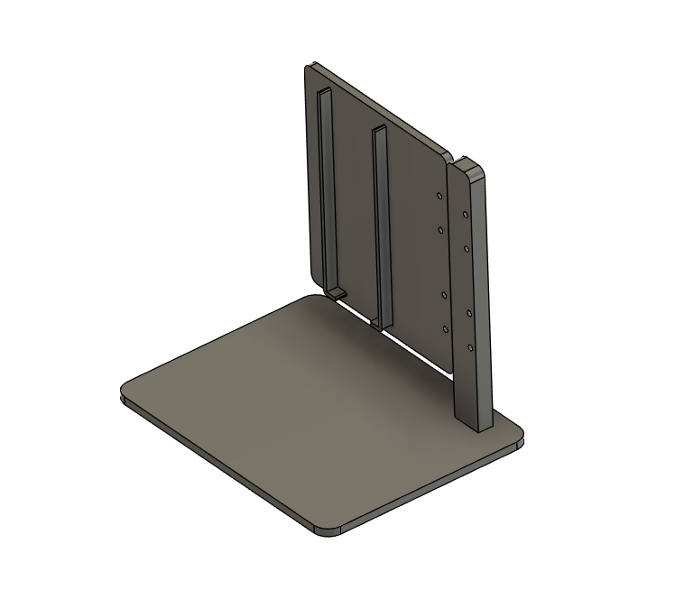
ESP1
ESP1
Since both the solenoid valve and stepper motor require 12 volt power sources they both could not be directly controlled by the ESP32 and instead needed to be controlled by intermediate systems. The stepper motor was controlled via a A4988 stepper motor driver with a PWM wave being sent to the drier which was then translated into stepper motor commands via the driver. This signal determined both the speed and number of steps the motor was commanded to rotate with the direction being controlled via a binary signal to the DIR pin. The solenoid was controlled via an NMOS transistor which when toggled would allow or b;lock current flow to the valve actuating it. In addition to these actuators a limit switch was also integrated to allow the system to determine when the balsa wood smacker has made a full swipe. This limit switch served as a rest state for the smacker with every down stroke starting from the switch and every upstroke ending at the limit switch.
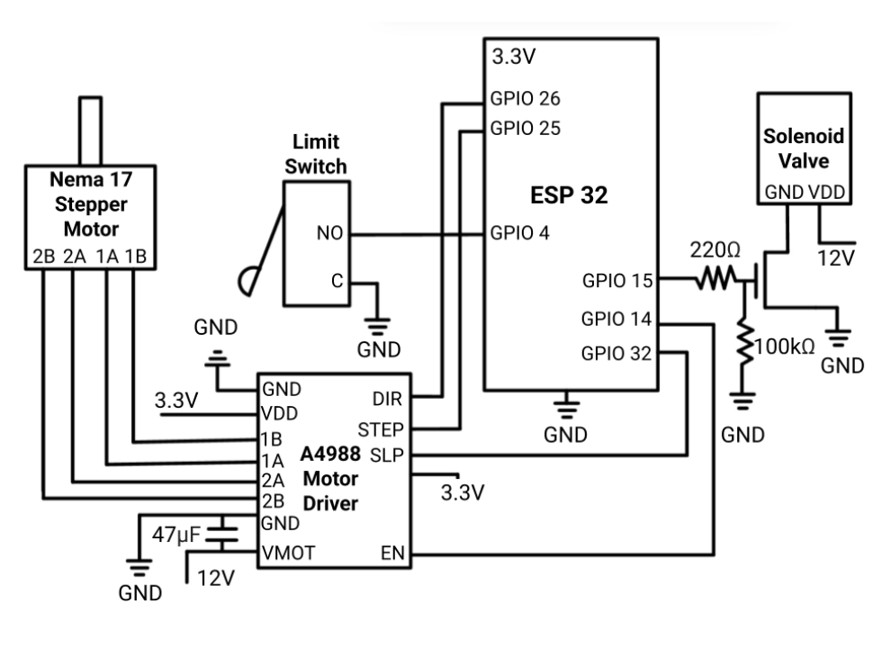
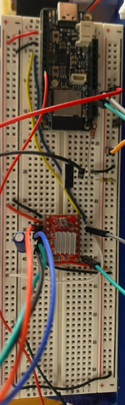
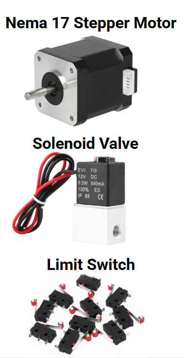
As mentioned previously the mount for the ESP1 hardware consisted of a telescoping stand with a platform in which all of the hardware was mounted. The telescoping stand was designed as a set of concentric rectangles with a series of holes that can be lined up with a pin to lock each rectangle in place. In this way various heights could be achieved by changing which holes each rectangle was pinned through. The mounting surface itself was printed as a single part with mounting holes for both the solenoid valve and stepper motor, boxes for the LiPO and 3.3 volt batteries, limit switch mount, and slider to attach the ESP1 breadboard too.
In addition to the mounting structure both the stepper motor smacker and solenoid sprayer need to be designed. The stepper motor smacker utilized a simple stick of balsa wood as its weapon due to its light weight nature with a 3D printed adapter connecting it to the stepper motor. Initial designs of the smacker attempted to utilize a pool noodle and a pool noodle p;us reciprocating pinion systems; however both systems proved to be too heavy for the stepper motor I had. THe solenoid valve utilized a pressurized tank and a set of hose fittings to form the sprayer. The tank used was initially designed as a manual plant waterer with a hand pump being used to pressurize a volume that would be released by a sprayer via a trigger. To convert this into the alarm's sprayer tank the mister and trigger were removed with the sprayer connected to the solenoid via a hose fitting and clamp. The other side of the solenoid also utilized a hose fitting as its nozzle with a piece of tin foil wrapped around it with a hole poked through to act as an orifice ensuring the water would be sprayed at sufficient velocity.
The software for the ESP1 portion of the alarm is housed entirely in one main loop which takes the commands it receives from ESP3 and then actuates a series of actuators depending on what alarm state that ESP3 reports to it. Within these loops contain the actuation commands for both the solenoid and the stepper motor. The solenoid command is fairly simple with a high signal, a pause and then a low signal being sent to the NMOS to open the solenoid for a period of time and then close it. The stepper motor code is much more complex. The command starts with a set degree the motor is commanded to actuate which is converted to PWM signal via the PWM generator helper function. In addition to just determining how manu steps it would take to achieve the required angle the function also accepts a requested RPM which then determines the period of the PWM wave. As a part of this RPM the function also utilizes acceleration ramping with the PWM wave starting with a larger period and then exponentially decaying to reach the target period and therefore RPM. THis is done to avoid slamming the motor with a high RPM starting from zero which can cause the motor to lose torque and lock up. The stepper motor also has a home position function which is used for the smacker upswing. This function actuates the motor in the upswing direction until it reaches the limit switch after which the motor shuts off and is ready to be used for another downswing.
In addition to the actuator commands there are additional functions that help the main loop receive commands from ESP3. These functions serve as interrupts which occur between each actuation step. These functions essentially check what the latest message from ESP3 was between actuation sets so that the controller does not need to go through an entire alarm loop before it shuts off in the case of a shut down or pause command. These functions also handle the additional empty pings that are sent by ESP3 which can clog up and prevent ESP1 from correctly interpreting commands. Essentially the interrupt function instead of just taking the most recent commands looks for the most recent non-empty command to use when deciding what to do next.
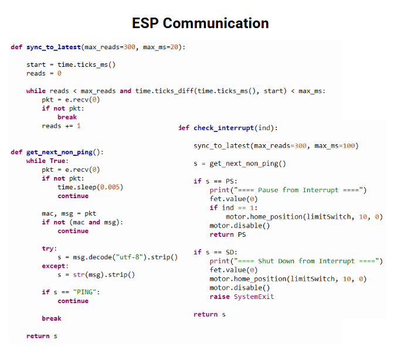
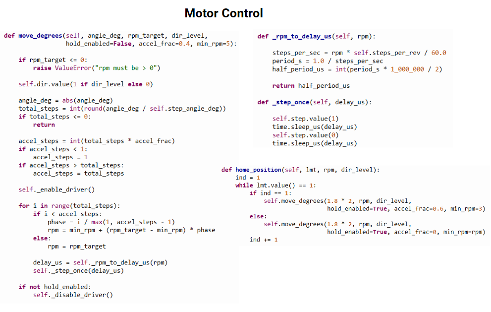
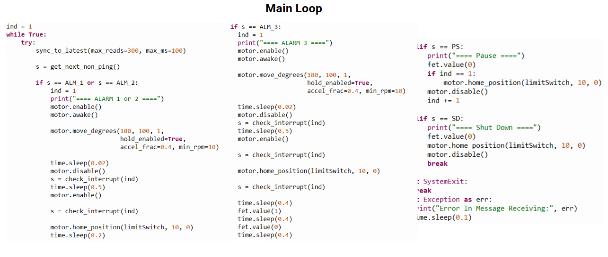
ESP1 Testing
ESP1 Testing
Before this project I had never worked with stepper motors before, as such much early testing went into learning how to control the stepper motor. This first test involved determining how to command the motor to perform a full 360 degree turn at a specified RPM. To do so I only connected the ESP32 and stepper motor driver to the breadboard and wrote stand alone code in micro-python that generated a PWM wave from a given degree and RPM request. The result of this unit test was successful with the motor successfully completing the task with no issues.
The next step was to test motor control in an upstroke downstroke motion with additional weight attached. This test was conducted when a pool noodle was still being attempted to be used as the wacker attachment with the pool noodle motor mount being used as the weighted test instrument. To perform this test the first code was modified to turn only 90 degrees with the DIR pin connected to allow for directional control. Now before each RPM generation and execution command was made and additional DIR command was sent, pulling that pin either high or low to determine what direction the motor was turning. As can be seen in the horizontal configuration the motor was able to achieve the desired goal. However when the motor was rotated such that the up and down strokes were in the vertical direction the motor struggled to achieve the desired motion at the desired RPM and could only achieve the motion at lower RPMs. Additionally, once the pool noodle was added the motor did not have enough power to actuate the pool noodle in any direction. As such it was determined that a different approach would need to be taken to make the pool noodle work.
The next phase of iteration and testing was integrating the mount and reciprocating pinion system with the electronic hardware. To overcome the issue with motor torque a reciprocating pinion system was developed in which a rack would be driven up and down rotating the pool noodle about a pivot point located on the ESP1 mount. The idea was that this would reduce the leaver arm the motor had to work over thus allowing it to move the pool noodle. The main drawback of this was that in order to get the range of motion that was needed for the smacker to be effective a fairly large rack and gear were needed. This resulted in these components being fairly weighty in their own right. Initial tests were promising with the gear being able to spin at the desired speed and across the desired range. However once the rack was added the motor ceased to be able to control the mechanism indicating that this design was not going to work.
Once the reciprocating rack and pinion was determined to not work I then pivoted to simply using a balsa wood stick as the smacker instead of the pool noodle. The balsa wood was significantly lighter than the noodle and as such worked very as the smacker given the underpowered motors we were using. This iteration also integrated the limit switch with solved issues with motor drift that had been observed in previous testing. In this configuration the smacker was able to perform multiple up and downswings at both the RPM and angle that was desired. This version did have some issues with acceleration ramping however. At this point I had yet to integrate the automatic exponential acceleration raming instead electing to utilize a hand tuned approach. In this approach I would send a series of one or two step commands on increasingly higher RPM until a final command at the desired RPM was sent. This ramping would be tuned manually via trial and error and would frequently result in locking or weird jumping behavior that can be observed in this video. That is why for the final iteration that was integrated into the full alarm system this method was abandoned and the automatic exponential ramping was adopted.
System Integration ad Demonstration
System Integration and Demonstration
This video is the final integrated demonstration of the alarm system. The video starts with my phone alarm going off which triggers the start of the alarm system. Once the phone goes off and a few seconds have passed the first stage of the alarm begins and the smacker starts actuating. This goes on for a time and I don't wake up which triggers the second stage of the alarm in which both the smacker and the LED strobe light are being actuated. After this occurs I get up from my pillow which pauses the alarm system and turn off my phone alarm. I however do not get out of bed and when I put my head back onto the pillow the force sensitive resistor senses I have gone back to sleep and the alarm resumes at level two with both the smacker and LED going off. Finally, after a little while longer of not getting up, the alarm state three engages and the water sprayer shoots water in my face. Once this occurs I get out of bed triggering the pause functionality once again however this time I fully get out of bed and leave the room. This triggers the IMU sensors on the door which fully shuts down the alarm system, ending the alarm sequence.
Project Submission Video
Project Submission Video
In addition to the presentation and live demonstration, the class required that we submit a video demonstration and explanation of our system for our final project grade. This video has been provided below which goes over the same design process I have discussed here as well as the design of ESP2 and ESP3. The video also includes the above recorded demonstration but with the sound enabled.

Gallery
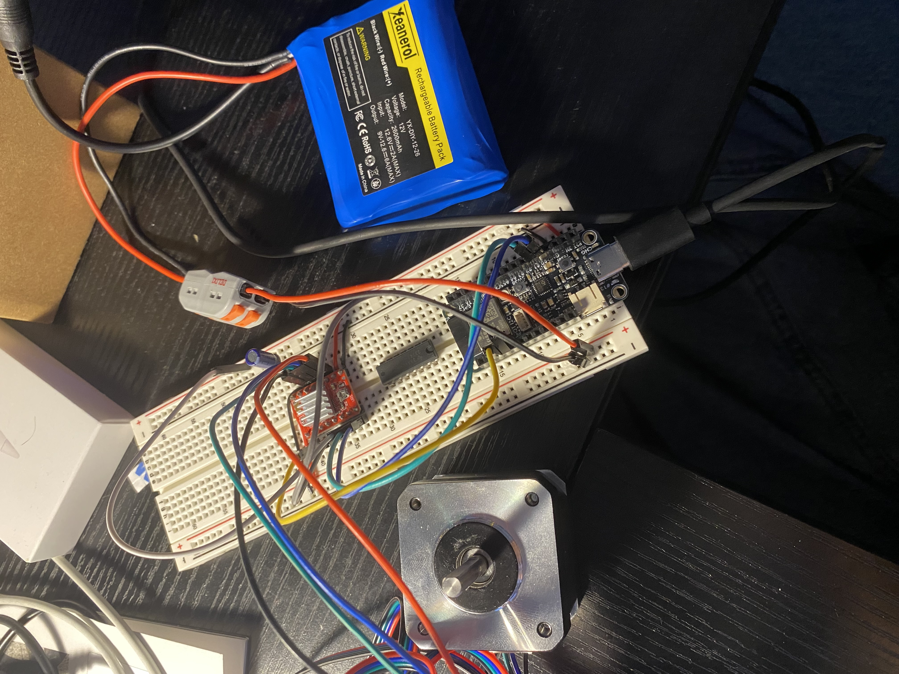
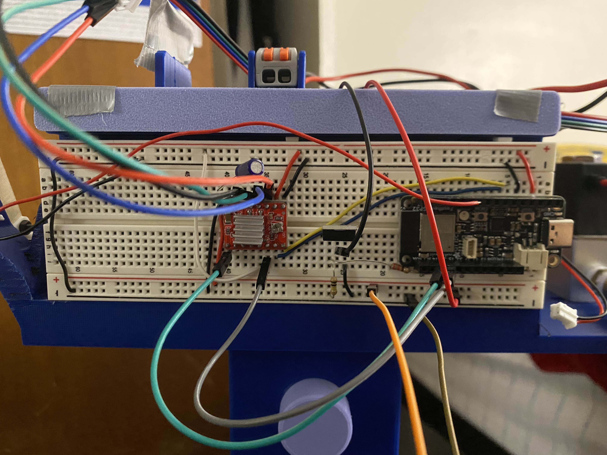
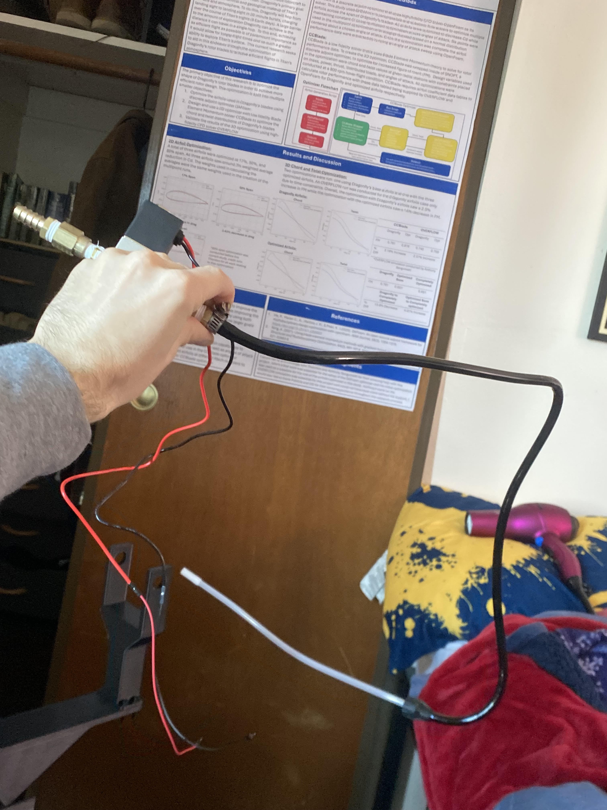